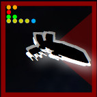

List of all units
Combat
How to play
In X-Wings Squadron benchmark, you first have to build 2 squadrons, or import them in JSON format, before the combat. You can also export your squads in the same format. You can decide which side you are going to play (human player) and which side is for the simple IA (computer player). Both sides can be played by IA or by you.
The game area is decomposed into several zones. The top menu presents actions available at all time. The left toolbar describes the selected unit and the current game phase controls. The center area is where the game takes place. It has a size corresponding to a 90cmx90cm area (normal size area) at the scale of the ships. You can select a unit by clicking on it on the center area or on its left/right description.
The top menu has a Show probabilities entry. It gives a table with the rows corresponding to the number of attack dices, columns to the number of defense dices. Each cell gives the percentage to hit for this combination of attack and defense dices, the color of the cell is red when it is over 50%, green otherwise. It also provides, when the attack hits, the mean number of hits and the mean number of criticals. The table is computed online, and the probabilities given a number of dices, for any combination of focus, hit, critical, blank are computed. The table summarizes these values. By selecting one of the tokens for the attacker/defender on the top of the table, you can see the impact of these tokens or rerolls on the probabilities.
Squad building
In this phase, only the left then right panels are activated. You first select the kind of ship, then the pilot and its upgrades. All pilots upto wave 6 are available, but the EPIC format is not handled (no huge ships). The controls to create a squad should be straightforward. When the first squad is built, press the red button "Next Phase" to build the second one. When both squads are built, press again the red button to start the combat !Combat
The left/right panels display the characteristics of selected unit: Name of the pilot, type of ship, in the top corner:pilot skill. For each weapon, you can click on its power to toggle its range. Weapons are in bright red when a target is in range, dark red otherwise. When you click on the pilot agility, it toggles range display. Shields and hulls are vertical dots, in blue and yellow resp. In the game area, the unit is represented with an image . The type of the ship is represented with its firing arc. There are 4 lines of dots, and as many dots of a given color as the value to represent. The colors correspond to the following: Orange: Skill of the pilot, Red: Strength of the attack with the primary weapon, Green: Agility of the ship, Blue and yellow: Blue dots represent shields, yellow are hull points. The total of the two values correspond to the number of hits necessary to destroy the ship.Combat Phases
Each phase enable you to do some actions. When done, press the Next phase button.1- Setup phase: You can drag units around and use the buttons in the left panel to turn them (including obstacles). This is not checked, but your units should not overlap obstacles or other units.
2- Planning phase: Select any unit and pick one maneuver available in the dial. Some maneuver may be automatically disabled, for instance red maneuvers when stressed. When all units have been assigned a maneuver, you can move to the next phase. You cannot pick maneuver for IA played units.
3- Activation phase: The first unit selected is one of the unit with the lowest pilot skill. You can still select manually any unit, but it is not possible to activate it if it is not its turn. Activation is done by pressing the "Move" button. Units are then moved according to the template of the selected maneuver (the template is not displayed). Collisions with obstacles and other units are automatically handled. You can then select one of the available action (or none), pressing the corresponding button. If there was a collision while performing the maneuver, no action is possible for this unit. If the action requires to select a new position (roll) or a target unit, possible positions are highlighted. Select one to complete the action.
4- Combat phase: Units are automatically activated by decreasing pilot skill. You can still select any unit manually but it cannot fire if it is not its turn. If there is no unit in range or if the selected unit overlaps an obstacle, this unit cannot fire. To fire a unit, press the corresponding weapon icon near the unit and then the target unit (among those highlighted). A window opens showing the rolls for the attacker and its target.You can play any modifying roll/reroll or use tokens by clicking on them. When done, press "ok".
The cleanup phase is here automatically done (removing unused tokens). After the combat phase, a new round starting with planning begins. When all units of a team are destroyed, the game stops. To start a new game, just reload the page !
About
X-Wings Squadron Benchmark is a web app for testing squadrons built for the X-Wing miniature game. You can design your squads and simulate a battle between them. Both sides can be controlled either by the player or by an simple AI. The user moves the different units and can try new strategies, squadron composition, maneuvers and placement. It can be used to build scenarios, benchmark against squads you can find in competition, try new ships or pilots... The app offers the following features:- Import/Export your squads using JSON format
- Move units and perform their actions as in the real game. All ship maneuver dials and of all actions in their bars are handled.
- Detection of collisions with other ships and asteroids, automatic handling of stress, action and combat effects, rolling hit dice for possible damage automatically.
- Automatic handling of a number of card effects (pilots, upgrades, ...). Biggs for instance is the unique possible target when in range of a ennemy. Howlrunner effect is automatically taken into account. A console provides feed back on what happens and which effect is triggered.
- Combat is as simple as selected a target, and using tokens. Dices are rolled, damages and criticals are delivered automatically, shields are used, ...
- Assess the probabilities to hit, to kill, the mean number of hits and criticals a unit can deliver, at any time and taking into account range, tokens, card effects.
- A simple AI ! It can move the units around and tries to fire at your units. It is simple to outmaneuver it but still, be careful not to be too confident :-)
Credits and disclaimer
The app is based on the vector fonts provided by Xwing-miniatures-font (see License thereafter). The JSON format of X-Wings squadrons provides the list of all ships, pilots, upgrades and several translations. The sounds of space ships, lasers and explosions come from Sa-Matra website. Thanks ! The code of the app relies on Snap for SVG and jQuery. See their websites for the licenses.Disclaimer
X-Wing: The Miniatures Game is a trademark of Fantasy Flight Games. This site is not endorsed by Fantasy Flight Games, Lucasfilm Ltd. or Twentieth Century Fox and is intended for entertainment and information purposes only. Star Wars, the Star Wars logo, all names and pictures of Star Wars characters, vehicles and any other Star Wars related items are registered trademarks and/or copyrights of Lucasfilm Ltd., or their respective trademark and copyright holders. This site in no way constitutes a threat to any trademark or intellectual property. This web app is not-for-profit and is only intended for use by fans of the game line.
Xwing-miniatures-font license
The MIT License (MIT)
Copyright (c) 2014 Geordan Rosario
Permission is hereby granted, free of charge, to any person obtaining a copy of this software and associated documentation files (the "Software"), to deal in the Software without restriction, including without limitation the rights to use, copy, modify, merge, publish, distribute, sublicense, and/or sell copies of the Software, and to permit persons to whom the Software is furnished to do so, subject to the following conditions: The above copyright notice and this permission notice shall be included in all copies or substantial portions of the Software. THE SOFTWARE IS PROVIDED "AS IS", WITHOUT WARRANTY OF ANY KIND, EXPRESS OR IMPLIED, INCLUDING BUT NOT LIMITED TO THE WARRANTIES OF MERCHANTABILITY, FITNESS FOR A PARTICULAR PURPOSE AND NONINFRINGEMENT. IN NO EVENT SHALL THE AUTHORS OR COPYRIGHT HOLDERS BE LIABLE FOR ANY CLAIM, DAMAGES OR OTHER LIABILITY, WHETHER IN AN ACTION OF CONTRACT, TORT OR OTHERWISE, ARISING FROM, OUT OF OR IN CONNECTION WITH THE SOFTWARE OR THE USE OR OTHER DEALINGS IN THE SOFTWARE.